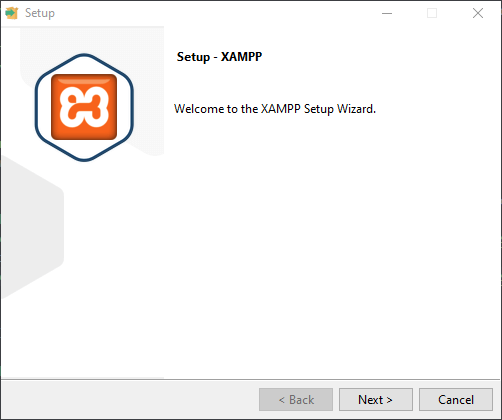
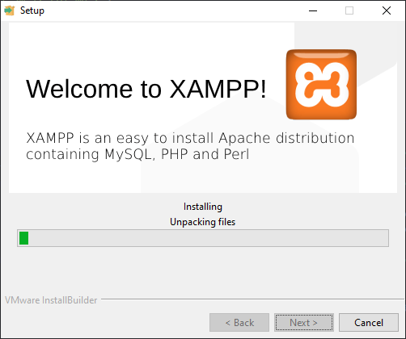
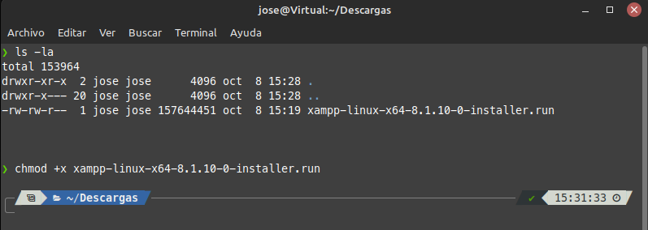

Instalación de XAMPP
Para instalar XAMPP en nuestro sistema, debemos dirigirnos a la siguiente web y descargar el paquete correspondiente al sistemas que estamos usando. Una vez hecho, empezaremos la instalación:
Para Windows, se descarga un ejecutable que guiará la instalación de forma sencilla.
Es el típico instalador de siguiente, siguiente, que todo el mundo conoce, así que empezamos con el primer click en siguiente (next)

La siguiente pantalla tiene algo más de chicha, y nos permite decidir que componentes del stack queremos instalar. En mi caso voy a desmarcar la opción de Perl, ya que no lo voy a usar. Sino sabes que es cada paquete, no te compliques y deja la instalación por defecto.

Es el momento de elegir la ruta de instalación, la ruta por defecto es C:\xampp y es recomendable dejarla así. Tras esta ventana hay otra de selección de idioma, pero solo están soportados el inglés y el alemán. Ahora es el momento de iniciar la instalación como tal.
Y listo, una vez finalizada la instalación, nos preguntará si queremos iniciar el panel de control y ya tendremos disponible el stack XAMPP

En sistemas linux, se nos descarga un script que debemos ejecutar. Pero dicho script viene sin permisos de ejecución, de modo que debemos darselo. El comando es el siguiente: chmod +x nombreDelArchivo
Ahora ya podemos ejecutar el script, eso si, como super usuario. El comando es el siguiente sudo ./nombreDelArchivo y nos aparecerá una ventana identica a la de la instalación en Windows:

Tras hacer click en siguiente, aparece una nueva ventana que nos da a escoger entre instalar solo los paquetes basicos del stack, o seleccionar también los de desarrollo. En este caso voy a dejar seleccionados ambos.

Se nos informa que XAMPP será instalado en la ruta /opt/lampp y empezará la instalación

Y listo, una vez se completa la instalación podemos abrir el panel de control de XAMPP